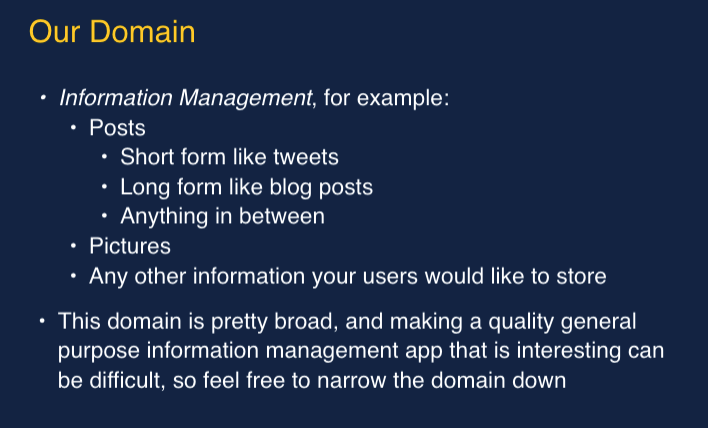

Madison Avenue advertising executive Alex Osborn developed the original approach and published it in his 1953 book, "Applied Imagination." Since then, researchers have made many improvements to his original technique. The approach described here takes this research into account, so it's subtly different from Osborn's approach. Brainstorming combines a relaxed, informal approach to problem solving with lateral thinking. It encourages people to come up with thoughts and ideas that can, at first, seem a bit crazy. Some of these ideas can be crafted into original, creative solutions to a problem, while others can spark even more ideas. This helps to get people unstuck by "jolting" them out of their normal ways of thinking. Therefore, during brainstorming sessions, people should avoid criticizing or rewarding ideas. You're trying to open up possibilities and break down incorrect assumptions about the problem's limits. Judgment and analysis at this stage stunts idea generation and limit creativity. Evaluate ideas at the end of the session – this is the time to explore solutions further, using conventional approaches.
(Source: https://www.mindtools.com/brainstm.html)
Why using BrainStorming?
Conventional group problem solving can often be undermined by unhelpful group behavior .
And while it's important to start with a structured, analytical process when solving problems, this can lead a group to develop limited and unimaginative ideas.
For a Brainstorming to be successfully performed, it is important to follow the rules:
Go to the following link if you need more information on the requirement of a Brainstorming process: click here!
The Next Step: Taking Action
After your individual or group brainstorming session, you'll have a lot of ideas. Although it might seem hard to sort through these ideas to find the best ones, analyzing these ideas is an important next step, and you can use several tools to do this.
Use Affinity Diagrams to organize ideas and find common themes.
Decision Matrix Analysis and Paired Comparison Analysis will help you choose between different options. You can also use the Six Thinking Hats technique to look at ideas from different perspectives; and the Modified Borda Count and Multi-Voting can help you choose between options as a team, particularly where the differences between options are quite subjective.
(Source: https://www.mindtools.com/brainstm.html)
Project Requirement Overview:

Attendence List:
Buwei Wu
Alexander G. Arias
Alexander Olsen
Antonio Peso Vilella
Charles Young
Deepansha Singh
Hyunimin Lim
Jennifer Jiang
Xiaoyu Chen
Agenda:
IMPORTANT: NO PROCRASTINATION
MORE IMPORTANT: DEBATE IS RECOMMEDNED BUT REMEMBER TO BE FRIENDLY
Meeting Schedule is set to be on Tuesday
Audio and video of the Meeting:
Things that were unfinished from last business!!!
The division of labor and The time of next meeting
Things that were unfinished from last business!!!
The division of labor and The time of next meeting
Things that were unfinished from last business!!!
The division of labor and The time of next meeting